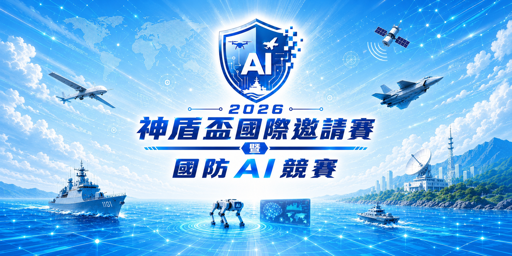

創新驅動
鼓勵前瞻技術與應用構想，探索 AI 於國防領域的創新可能。

MISSION
從真實任務出發，讓 AI 技術落地於國防應用場景。
鼓勵前瞻技術與應用構想，探索 AI 於國防領域的創新可能。
串聯學研、產業與法人能量，促成跨領域、跨單位的合作。
以任務情境與實測環境驗證技術方案的可行性與價值。
透過競賽、研討與展示，發掘並培育國防 AI 領域人才。
65 萬元
AI 資安攻防：LLM 攻擊技術、CTF、內網滲透與 AI 模型攻擊。
90 萬元
開放所有 AI 應用於國防領域的創新提案，決賽現場展示。
32 萬元
開放集船舶目標識別、船舶影像可解釋 AI、輕量化國防 LLM。
33 萬元
模擬空戰環境中的 AI 即時對抗與智慧決策。
分項獎金與得獎名額以主辦單位正式公告為準。
KEY DATES · TIMELINE
期程依競賽辦法修正版（2026-08-06）；若有異動以主辦單位公告為準。
待公告
公布各競賽辦法、參賽資格與報名方式。
至 2026.09.05 – 10.21
神盾盃至 9/5（SurveyCake）；國防 AI 競賽至 10/9、AI 研討會至 10/21（活動官網）；AI 飛行員截止日待公告。
2026.10.09 / 10.21
國防 AI 競賽書面資料至 10/9；AI 研討會模型提交至 10/21。
2026.09.17 – 10.21
神盾盃資格賽 9/17–19 線上 57 小時；其餘由各主題提需單位驗測與書面審查。
2026.10.26
國防 AI 競賽 10/26 公告晉級；其餘依各競賽公告。
2026.11.07—08
於國立成功大學舉行決賽、成果展示、研討與體驗活動。
已確認2026.11.08
公布得獎名單並舉行頒獎典禮，為兩日決賽畫下榮耀終點。
FINALEIGHT THEMES
前四項為競賽活動；後四項為 11/7–11/8 決賽當日現場活動。
FINALS PROGRAM
決賽當日時程尚未確定，確認後將於本區更新。
決賽當日報到、競賽、論壇及現場活動時間，待主辦單位確認後更新。
決賽、成果展示及頒獎程序，待主辦單位確認後更新。
先閱讀競賽說明，建立帳號後即可選擇參賽項目並填寫報名資料。